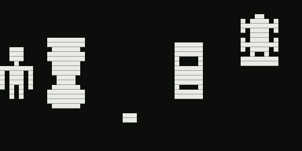
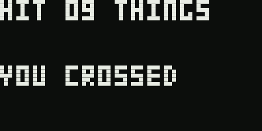

Dodgit
Fred Lever (Jnr) · DREAMER no. 12 (1981-08) p. 12 1K RAM



A person at the left of the screen must cross four lanes of random cars and trucks. The only control is a step to the right and there is no way back. Ten hits means you lose; reaching the right edge wins.
Keys
6 = step right; F returns to CHIPOS.
Files
| File | Version | Load | Run |
|---|---|---|---|
| Dodgit.c8 | main | 0200-037D | C000 |
Listing as transcribed (with notes): dodgit.txt
Source
DREAMER no. 12 on archive.org, p. 12 (PDF page 14). Author: Fred Lever (Jnr).
Corrections applied
None.
Open doubts
None.